▣Room Select
Browse/search rooms and warp around the currently patched chapter.
The current recommended SFT DELTARUNE Debugging Mod build. v2 adds the cleaner UI, controller support, Runtime Logger overlay, GML Code Viewer support, real flag metadata support, object spawner, script call tools, and persistent settings.
This build replaces v1 as the recommended download. v1 stays available as a legacy option. The public package does not include DELTARUNE exported code, sprites, sounds, music, or data files.
v2 is meant for debugging/research, not normal play. Some advanced tools can break the game if used out of context.
Browse/search rooms and warp around the currently patched chapter.
No-clip, speed helpers, teleport-style actions, and movement/debug utilities.
Hitboxes, labels, bounds, layer tests, player markers, and interact/trigger style overlays.
Search and play music or SFX from the loaded chapter.
Search sprites, preview frames, and inspect animation/frame info.
Shows code names and optional source previews embedded from user-exported UMT GML files.
Safe flag/global metadata viewer. Can embed real flag names from a local metadata file.
Records room/object/action/system notes with optional always-show side overlay and category pages.
Dangerous advanced page for calling scripts manually. Use test saves only.
Spawn existing objects. Spawned objects run their real game code, so this can be powerful and risky.
Debug menu settings save into SFT_DDM_SETTINGS.ini.
Xbox-style controller support with Back+Start open/close and A/B navigation.
DR_DDM_v2.csx through Scripts → Run other script....The mod does not include DELTARUNE source code. Users export their own GML locally.
Put exported UMT code files in the matching folder before running the .csx installer. The installer embeds safe previews into the patched data file. Do not upload exported DELTARUNE code with the mod.
Includes the v2 .csx, detailed README, placeholder GML folders, flag metadata sample, and converter helper.
Only the script file. Use the package if you want the full documentation and optional folder setup.
Old version kept for archive/testing.
Older screenshots are still included; v2 has a cleaner drawn UI and more menu categories.
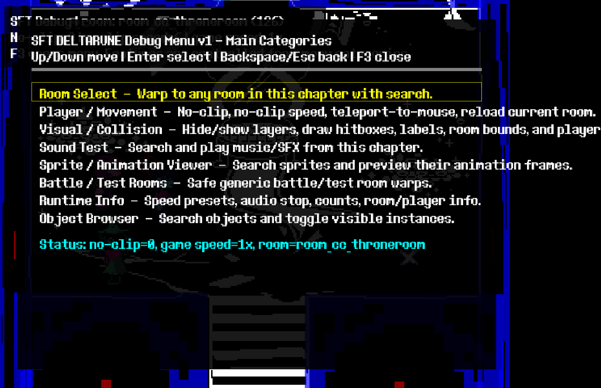
DDM Menu1Debug Menu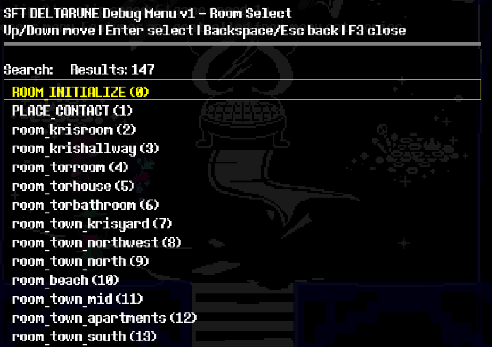
DDM Menu2Debug Menu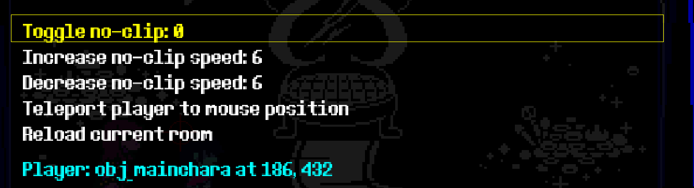
DDM Menu3Debug Menu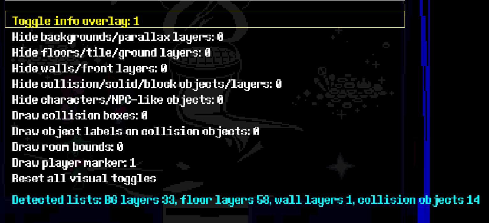
DDM Menu4Debug Menu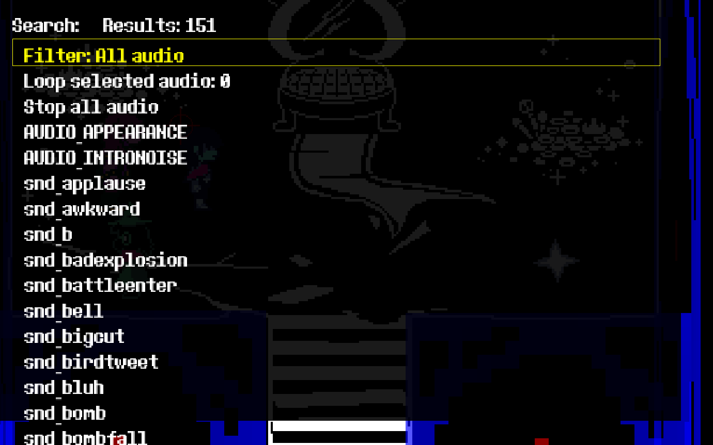
DDM Menu5Debug Menu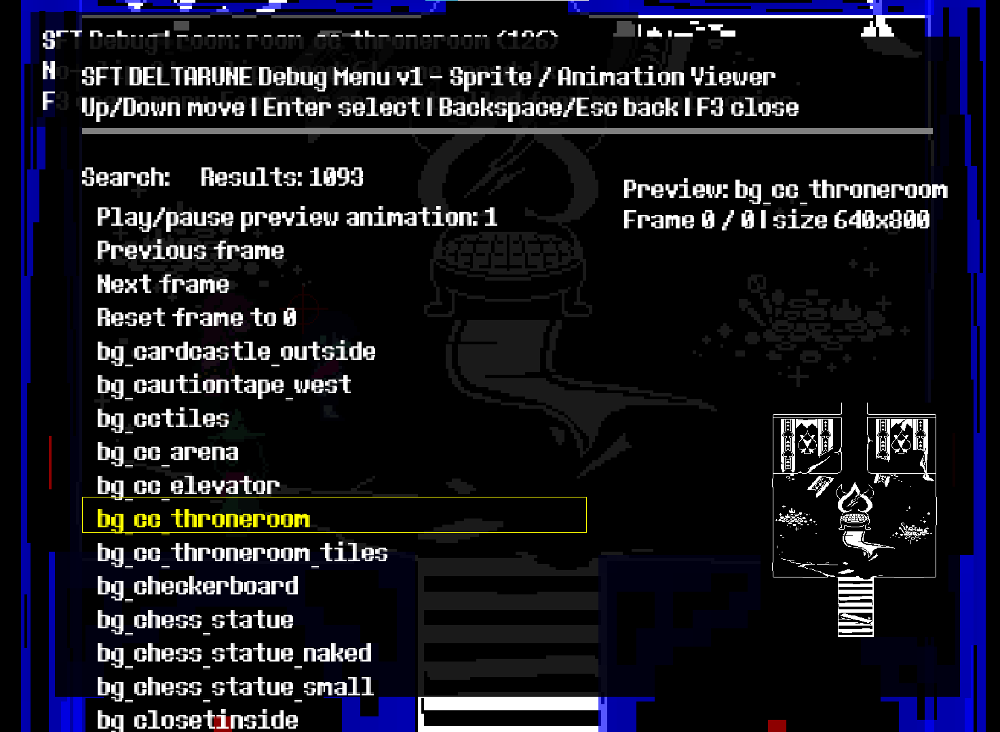
DDM Menu6Debug Menu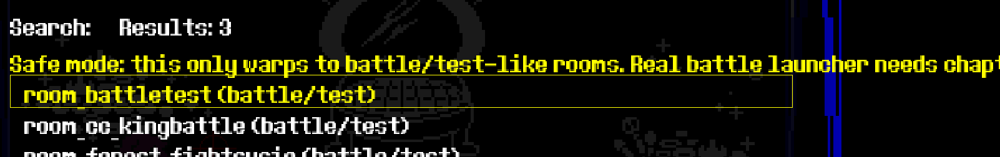
DDM Menu7Debug Menu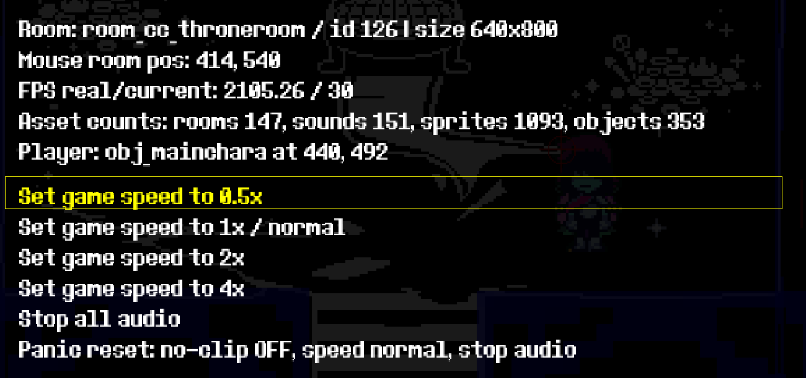
DDM Menu8Debug Menu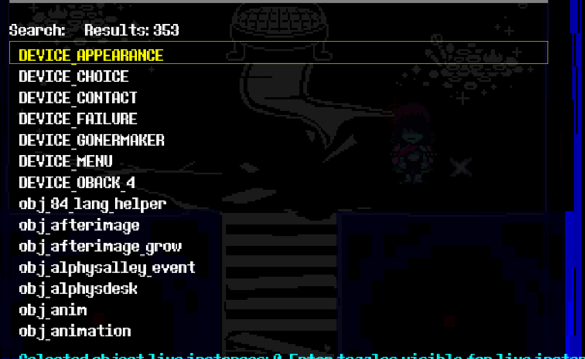
DDM Menu9Debug Menu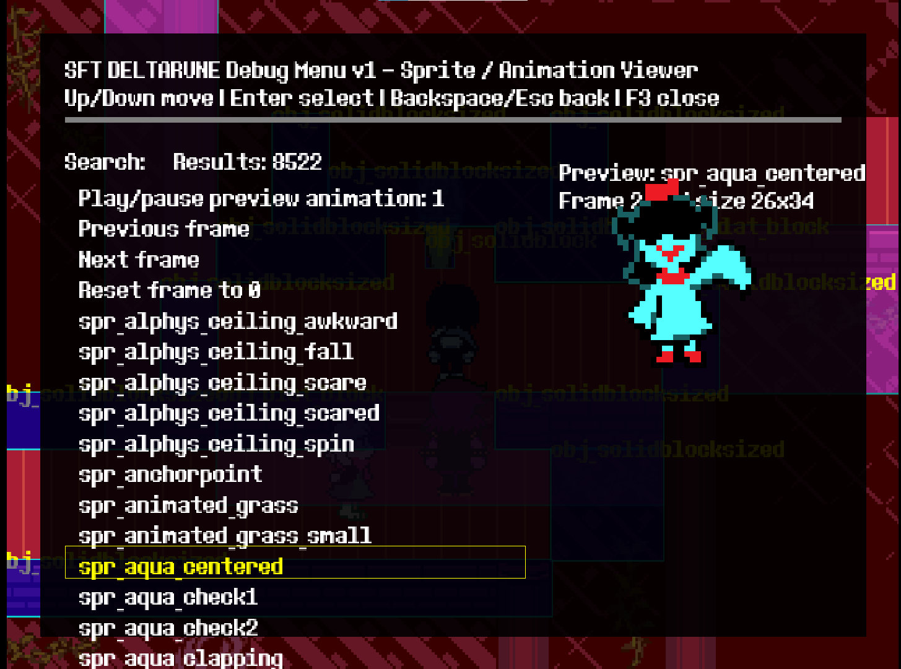
Sprite ViewerSprite Preview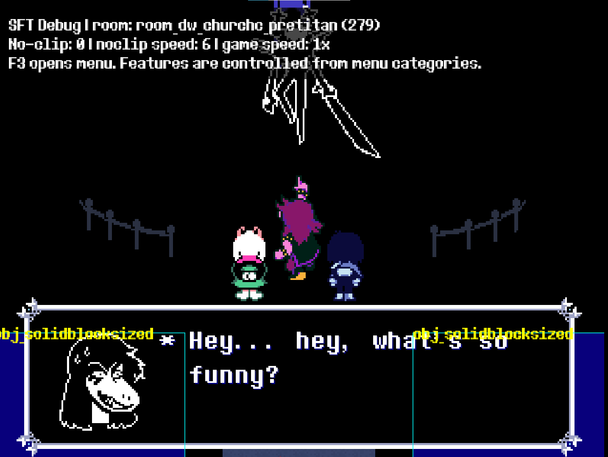
Visual ToolsCollision / Visuals